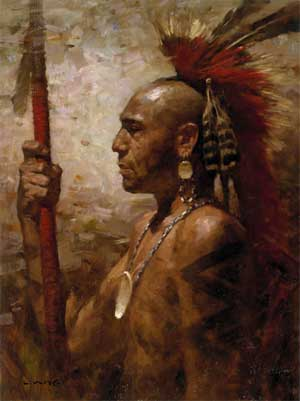
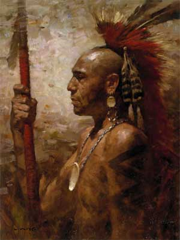

In the old days when giants roamed along the North Pacific Coast, there lived on the banks of a great river a poor Indian woman. She was the daughter of a dead chief—a great man—but she had fallen on evil days. Against her parents' wishes, she had married a worthless fellow; he was lazy and useless, and she was very poor and unhappy. One night a son was born to her. It was a wild stormy night; the winds roared, the thunder crashed, and terrible lightnings forked the sky. The boy was born with strange marks upon him, and on his head were horns like sharp arrow-points. The wise men of the place shook their heads and said, "No good can come from him; he will come to a bad end."
As the boy grew up, it was seen
that the prophecy of the wise men would surely come
true. He was very wicked, and he soon became known
for his bad deeds. He was the terror of all the
country on the Pacific Coast. But his mother loved
him well, for he was her only child, and she petted
him like a baby, even after he was a big boy. He did
not take kindly to his mother's caresses, and when
she petted him he always grew angry and said, "Don't
pet me, I am not a baby." One day as she petted him, he became very cross as was his habit, and in his rage he ran the arrow-points of his head into her breast and killed her. Then he took to the woods, and lived as an outlaw in the forest. He robbed all who came his way, until he had a great store of goods hidden in a secret place. His hand was against everybody's, and everybody's was against his.
Soon the tale of his crimes spread all over the North Pacific Coast, and he was held in great fear. The Chief of the people called a meeting of his wise council to decide what should be done. They resolved that he must be killed and the land rid of his terrors. So they drew lots to see who should seek him in the forest. The lot fell to his uncle—the brother of his mother—a very brave man. And the uncle set out into the woods to seek his wicked nephew, who was known as "the arrow-headed one."
But the whale did not understand the
language of the little clams. And he said to
Glooskap, who understood, "What do they sing?" But
Glooskap, wishing to land at once, answered, "They
tell you to hurry for a storm is coming,—to hurry
along as fast as you can." Then the whale hurried
until she was soon close to the land. Glooskap, wishing the whale to go aground so that he could more easily walk ashore, opened his left eye and peeped, which was contrary to the whale's laws. And at once the whale stuck hard and fast on the beach, so that Glooskap, springing from her head, walked ashore on dry land. The whale, thinking that she could never get off, was very angry, and sang a song of lament and blame. But Glooskap put one end of his strong bow against the whale's jaw, and taking the other end in his hands, he placed his feet against the high bank, and, with a mighty push, he sent old Blob again into the deep water. Then, to keep the whale's friendship, he threw her an old pipe and a bag of Indian tobacco leaves—for Glooskap was a great smoker—and the whale, greatly pleased with the gift, lighted the pipe and smoking it swam far out to sea. Glooskap watched her disappear from view until he could see only clouds of her smoke against the sky. And to this day the whale has Glooskap's old pipe, and sailors often see her rise to the surface to smoke it in peace and to blow rings of tobacco smoke into the air.
The outlaw had found a cave in the forest, and there he lived in security. He killed everybody who came near it, and he marked on his spear a notch for each one he killed. In a very short time the notches on his spear numbered fifty. He heard of the council of the wise men and of their effort to capture him, and that his uncle had drawn the lot for the task. He resolved to defend himself against an attack, and he made his cave as strong as he could. He thought that his uncle would come to the cave in search of him.
But his uncle was a very wise old
Indian. He knew better than to attack his nephew's stronghold. Instead, he too selected a cave and turned it into a fort. He took bundles of dry grass and leaves, and shaped them like men, and stood them up around his cave like soldiers always on guard. And he told all the people of the village to stay in hiding until "the arrow-headed-one" was killed. Then he waited alone in his cave.
For several nights "the
arrow-headed-one" stayed in his cave waiting for his
uncle's attack. But no attack was made. Then he grew
tired of waiting, and in a spirit of recklessness
and daring he resolved to attack his uncle, for he
knew that he was in the cave hardby. He took his
spear and bow and arrows, and went to his uncle's
cave to kill him. He took with him his helping evil
spirit in the form of a small bird about the size of
a robin. When he came to the cave, he thought that
one of the dummy grass men was his uncle and he
hurled his spear at it. And while he was about it,
his uncle, hidden behind a rock, shot a poisoned
arrow at him and wounded him so badly that he fled
back to his own cave. The small bird sucked the
poison from his wound, but the wound left him very
weak. His uncle had followed in his tracks, and soon
came upon him. But "the arrow-headed-one," tired out
because of his wound, had little stomach for a
fight, and when his uncle entered the cave, he
pleaded with him not to kill him. "Do not kill me,"
he said, "I have a great store of goods hidden in
the cave. If you spare me, I will give you all and make you rich. And I will never kill another person."
But his uncle resolved to put him to death because he had killed his mother and had so many notches on his spear. So he killed him and dragged his body outside and burned it. Then he went home. "Fear no longer," he said to the villagers, "'the arrow-headed-one' is dead." But the evil that the bad Indian had done lived after him. The four winds drove his ashes from the spot where his body was burned. The ashes blew everywhere, and were changed into the little black flies whose descendants to-day torment people in the summer in the northern woods of Canada. And the bad Indian's wickedness still lives in the black flies that came from his ashes.
 

Transcribed by Cyrus MacMillan, 1917. The writer's deepest thanks are expressed to the nameless Indians and "habitants," the fisherman and sailors, "the spinners and the knitters in the sun," from whose lips he heard these stories.
Back to Top